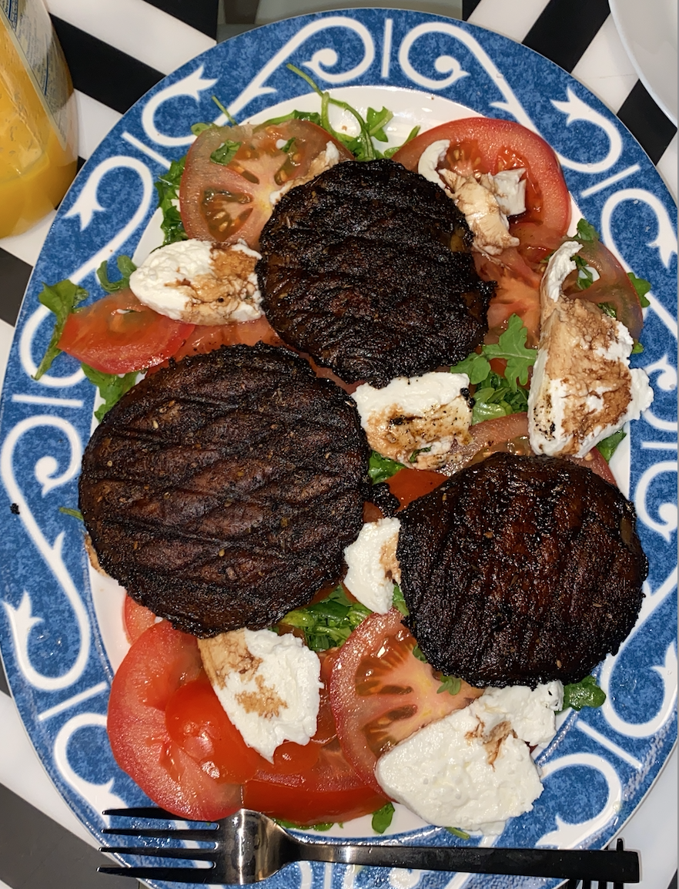

[C]ODE TO COOK
WHERE CODING MEETS COOKING
Home
About
Recipes
Posts
Gallery
Tags
The Code
Portobello Mushroom Salad
Makes: 4, Time: 25 minutes
for the mushroom:
4 large portobello mushroom heads
3 tbsp olive oile
1/4 tsp cayenne, paprika, garlic powder, onion powder, and mixed herbs
1 tsp salt
for the salad:
2 cups arugula or spring mix
2 roma tomatoes
2 packages large buratta mozarella
2 tbsp olive oil
1 tbsp balsamic glaze
1 tsp sea salt
Prepare the seasonings in a bowl by mixing all together.
Marinate mushrooms by coating in oil and massaging seasonings into meat of the mushroom.
Add mushrooms to stovetop grill plate and cook for 7 minutes on each side on medium-high heat, or until dark brown and tender.
While mushrooms are cooking, prep salad by washing arugula or spring mix, slicing tomatoes, and slicing buratta.
Layer arugula, tomatoes, and mozarella on a salad plate. Add grilled mushrooms and dress with olive oil, balsamic glaze, and salt. Serve and enjoy!

![This is the logo for [C]ODE TO COOK, an image of a spatula inside a computer.](images/logonoslogan.png)